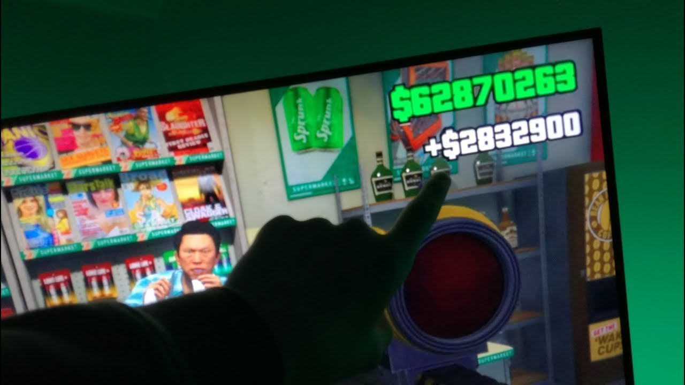

WIE MAN GELD AUF NINTENDOGS BEKOMMT - INTERNET
2020.12.09 18:28
Nützliche Artikel Zuhause Schönheit Medizinisch Sport Haupt / Internet / Wie man Geld auf Nintendogs bekommt
Wie man Geld auf Nintendogs bekommt
2020 InternetEs gibt mehrere Möglichkeiten, Guthaben für den Verkehrsaustausch zu erhalten. Die gebräuchlichste Methode ist das Surfen im Datenaustausch und das Sammeln von Credits, indem Sie die Seiten anderer Personen anzeigen. Während Sie dies auf einem kostenlosen Konto tun können, lohnt es sich immer, auf ein professionelles Konto umzusteigen, da dies Ihnen mehrere Vorteile bringt. Zuallererst wird Ihre Kreditgewinnquote viel besser sein, so dass Sie jedes Mal, wenn Sie im TE surfen, mehr Credits verdienen. Zweitens erhalten Sie jeden Monat eine große Anzahl von Credits, die Sie in Ihrem Pro-Status halten.
Nintendogs und Katzen - schnelle Geldstörung!
Verkehrsvermittlungen bieten oft spezielle Angebote und verschenken zusätzliche Gutschriften an alle, die innerhalb eines bestimmten Kampagnenzeitraums Upgrades erhalten. Neue TEs machen oft sehr schöne Angebote, um ihre Abonnentenliste schneller zu erstellen. Etablierte TE';s verschenken manchmal kostenlose Kredite, um Jubiläen zu feiern. Andere Börseninhaber führen spezielle Angebote zum halben oder niedrigen Preis / Bonusguthaben. Achten Sie auf diese Sonderangebote und nutzen Sie sie. Es gibt keinen Grund, warum Sie jemals den Standardpreis für Gutschriften bezahlen müssen.
Sie können auch Bonuspunkte sammeln, nachdem Sie während einer einzelnen Surf-Sitzung eine bestimmte Anzahl von Seitenaufrufen abgeschlossen haben. Erfahren Sie, welche TEs diese Art von Bonus anbieten, und versuchen Sie jedes Mal, wenn Sie an einem bestimmten Datenaustausch surfen, die erforderliche Anzahl von Seitenaufrufen abzuschließen, um den Bonus zu nutzen.
Eine der besten Möglichkeiten, Bonusguthaben zu erhalten, ist das Erstellen einer Downline. Jedes Mal, wenn Sie ein neues Mitglied anwerben, verdienen Sie wahrscheinlich eine bestimmte Anzahl an Credits, oder Sie können Credits zu einem günstigen Preis erwerben. Wenn das Mitglied ein Upgrade durchführt, werden Sie mit einer Provision entweder in bar oder per Gutschrift belohnt. Sobald Ihre Downline eine bestimmte Größe erreicht hat, müssen Sie nicht mehr länger im TE surfen, um Credits zu generieren.
Da sich TEs frei beteiligen können, können selbst erfahrene Vermarkter ohne großen Aufwand eine Downline aufbauen. Eine der besten Möglichkeiten, dies zu tun, besteht darin, sich an mehreren Verkehrsbörsen zu beteiligen und diese jeweils an Ihren anderen Börsen zu promoten. Sie können mit einer vernünftigen Anmeldungsrate rechnen, weil Sie Ihre TEs bei einer sehr zielgerichteten Zielgruppe ansprechen - Personen, die TEs verwenden!
Sie möchten Ihre Standard-Credits jedoch nicht für diese Werbekampagne verwenden. Viele TE-Benutzer wissen nicht, dass sie drei Arten von Gutschriften für die meisten Börsen erhalten, Standard-Gutschriften, Banner- und Textanzeigen. Reservieren Sie Ihre Standard-Gutschriften für Ihr Hauptangebot und verwenden Sie die andere Art von Gutschriften, die Sie erhalten, wie beispielsweise Banner-Gutschriften und Gutschriften für Textanzeigen, um Ihre TEs gegenseitig zu fördern.
Sie können Ihren Austausch auch auf Ihrer Website und in Ihrem Blog fördern. Erstellen Sie eine Liste aller TEs, denen Sie beigetreten sind, und fügen Sie Ihre Partner-Links hinzu, sodass die Benutzer Ihre Liste einfach überprüfen und sich direkt von Ihrer Webseite aus anmelden können.
Wenn Sie alle Tipps in diesem Artikel befolgen, können Sie jeden Monat Tausende von zusätzlichen Credits für Ihre Internet-Marketingkampagne verdienen, ohne stundenlanges Surfen an den Datenverkehrsbörsen zu verbringen. Wie man Geld für Nintendogs erhält In der heutigen Welt wissen wir, dass enormer persönlicher, geschäftlicher und geschäftlicher Stress mit Geldstress zusammenhängen kann. Wir wissen auch, dass Weihnachten eine Zeit sein kann, in der zusätzliche Geldbelastung für viele Familien ein echtes Problem sein kann. Mit diesen 6 großartigen Geldtipps, die in die Praxis umgesetzt werden, können Sie damit beginnen, den Geldstress zu lindern und sich in Richtung einer gesünderen und glücklicheren finanziellen Lage und eines insgesamt glücklicheren Lebens zu bewegen!
Tipp 1. - Entwickeln Sie ein :Geld: Bewusstsein. Sie müssen sich auf das Geld konzentrieren, das in Ihr Leben kommt und das aus Ihrem Leben fließt. Dies bedeutet, dass Sie jeden einzelnen Cent, den Sie ausgeben, aufschreiben und verfolgen. Holen Sie sich einen Notizblock und notieren Sie sich 2 Wochen lang das Datum, die Zeit, das, was Sie ausgegeben haben, für was Sie es ausgegeben haben, warum Sie es ausgegeben haben, wie Sie sich danach gefühlt haben, ob Sie es brauchen, und schreiben Sie, was mit dem Geld gekommen ist und was Sie setzen auf ein Sparkonto.
Tipp 2.? Erarbeiten Sie einen Sparplan. Sie brauchen einen Sparplan. Lassen Sie sich am besten jeden Tag einen Betrag automatisch von Ihrem Konto einem speziell eingerichteten Sparkonto belasten. Die Idee ist, mindestens 10% der Einnahmen zu sparen. Eröffnen Sie ein Sparkonto, auf dem Sie 24 Stunden benötigen, bevor Sie sich zurückziehen können. Dies hilft Ihnen, auf dem richtigen Weg zu bleiben. Die Idee ist, dieses Geld für Investitionen wie den Kauf von Anteilen oder für eine Kaution für eine Immobilie zu verwenden. Sie werden staunen, wie Sie dieses Geld nicht vermissen werden und Sie werden lernen, wie Sie den Rest Ihres Geldes budgetieren können. Lesen Sie :The Richest Man in Babylon:, einen zeitlosen Klassiker über Geldgeschicklichkeit. Es hat unzählige Leben verändert! Sie können Ihren Kindern dieses kleine Buch sogar vorlesen, und auch sie werden eine Fülle von Lektionen lernen.
Tipp 3.? Erfahren Sie, wie Sie budgetieren. Das mag einfach klingen, ist aber tiefgründig. Wenn Sie lernen, wie man ein Budget und Tricks einrichtet, um Sie mit Ihrem Budget auf dem Laufenden zu halten, kann Ihr Leben buchstäblich zum Besseren an vielen Fronten werden. Dies ist eine erlernte Fähigkeit. Eine gute Idee ist, jemanden zu finden, der Sie mit einem Budget unterstützen kann. Finden Sie jemanden, mit dem Sie sich wohl fühlen, um Ihre finanzielle Situation zu teilen und der mit Geld geschickt ist. Lernen Sie nicht von jemandem, der finanziell nicht reichlich vorhanden ist. Lernen Sie von jemandem, der erfolgreich ist und Ihnen zeigen kann, was nicht zu tun ist und was zu tun ist. Ich empfehle Ihnen dringend, in einer Sitzung bei einem guten Buchhalter zu buchen, der Ihnen bei der Planung eines Start-up-Budgets sowie bei der Überwachung und Bewertung Ihrer Aktivitäten helfen kann. Jemanden zu haben, der verantwortlich ist, wird Ihnen in den ersten Tagen helfen, den Überblick zu behalten.
Tipp 4? Entwickeln Sie eine positive Einstellung zum Geld. Sie haben dieses Sprichwort gehört: :Geld wächst nicht auf Bäumen: oder :Geld ist die Wurzel allen Übels:. Nun, es ist Zeit, das negative Selbstgespräch zu ändern. Es dient dir nicht. Diese Art des Denkens hält dich zurück und sabotiert dich. Sie müssen sich auf die positiven Aspekte des Geldes wie das Geld konzentrieren? Unterstützt ein glückliches, gesundes Leben. Sie müssen Selbstsabotage verhindern, damit Sie sich nicht auf eine Tangente verlassen und Ihr Geld ausgeben und nicht an einem Budget festhalten. Ich empfehle Ihnen dringend, sich eine Kopie von Michele Bloods? Success ';CD von www.musivation.com zu besorgen und sie in Ihrem Auto zu spielen, wenn Sie einen Spaziergang machen oder zu Hause im Hintergrund haben. Michele hat der Musik positive Worte gegeben. Ihre Musik wird dazu beitragen, Ihre Selbstsabotage zu verändern, indem Sie Ihre Gedanken in positivere unterstützende Gedanken umwandeln. Sie hat ein :Geld: -Lied, das Sie jeden Tag spielen und die Vorteile nutzen wollen! Ihre Musik geht direkt in Ihr Unterbewusstsein über, und dies ist der Bereich Ihres Geistes, den Sie ausführen müssen. Tun Sie sich also einen Gefallen und kaufen Sie sich ihre CD als Weihnachtsgeschenk für sich selbst und entwickeln Sie noch heute eine positive Einstellung für Ihr Geld!
Tipp 5.? Ihre Geldangst ansprechen? Denken Sie daran, dass Geld wirklich nichts anderes ist als Energie, die Sie nutzen oder von Ihnen laufen lassen können. Ignorierst du dein Geld? Sie tun dies, indem Sie nicht wissen, wohin es geht, und dadurch verlieren Sie seine Kraft. Wenn wir unser Geld oft ignoriert haben, enden wir oft in Gedanken und haben Angst, nicht genug Geld zu haben. Sobald Sie anfangen, auf Ihr Geld zu achten, werden Ihre Ängste nachlassen. Sie werden wissen, woher es kommt und wohin es geht. Dann lernen Sie, wie Sie es nutzen können. Sobald Sie die Fähigkeiten erlernen und in die Praxis umsetzen, werden Sie feststellen, dass Sie mehr Geld haben, als Sie für möglich gehalten hätten. Ihre Ängste rühren von mangelndem Wissen und Verständnis dafür, wie Sie die Energie des Geldes nutzen können. Dies ist eine Fähigkeit, die Sie erlernen können. Die Forscher sagen uns heute, dass es wichtig ist, zu vermeiden, dass Sie Angst vor Geldmangel haben, da unser Fokus auf stärkeren neuronalen Schaltkreisen in Ihrem Gehirn baut. Worauf Sie sich konzentrieren, wird erweitert. Sie möchten nicht mehr Stress aufbauen, weil Sie sich auf die Angst vor dem Geld konzentrieren. Denken Sie daran, dass Angst für :falsche Beweise, die wirklich erscheinen:, steht. Konzentrieren Sie sich also darauf, zu lernen, wie Sie die Energie des Geldes nutzen können, und Ihre Ängste werden nachlassen.
Tipp 6? Eine Anlagestrategie entwickeln. Dies ist eine Fähigkeit, die erlernt werden muss. Sie können zu einem örtlichen College gehen oder eine Gruppe finden, die Sie unterrichten kann. Finden Sie eine Strategie, die Ihnen gefällt, und konzentrieren Sie sich darauf, alles über diese eine Strategie zu lernen. Sie werden Vertrauen aufbauen und wissen, wie Sie in diesem Bereich eine gute Anlagestrategie für Ihre Zukunft entwickeln. Denken Sie nicht daran, dass Sie Ihr hart verdientes Geld einer anderen Person übergeben, um es für Sie zu investieren. Sie müssen zumindest die Grundlagen kennen, um eine fundierte Entscheidung treffen zu können. Wissen gibt Ihnen wieder Vertrauen, um unterstützende Entscheidungen für das Wachstum Ihrer Investitionen zu treffen.
Beginnen Sie mit der Umsetzung der oben genannten Tipps und Sie werden feststellen, dass sich Ihre Welt verändern wird. Es erfordert Mut und Engagement, positive Veränderungen in Ihrem Leben vorzunehmen. Du kannst es schaffen. Treffen Sie noch heute eine Entscheidung, um zu beginnen. Finden Sie Menschen, die Sie unterstützen können und führen Sie und Ihre zukünftigen Tage und zukünftigen Festtage werden weniger stressig und fröhlicher sein!
Tags: Geld, Nintendogs
Quick-Links
HauptKategorie
Geisteswissenschaften & Technik Internet Schönheit Wohnkultur Hochzeit Technologien Internet Finanzen GeschäftSupport-Service
Benötigen Sie Weitere Hilfe? Wenn Sie Die Antwort Nicht Finden, Kontaktieren Sie Uns Für Weitere Unterstützung. [email protected]
Wie Funktioniert Das
Unterhaltung
Es ist wichtig, dass Sie das Beste aus Ihren Gesangsstunden herausholen, da Sie am Ende nicht viel Zeit und Geld ausgeben möchten, ohne die Vorteile zu nutzen. Gesangsunterricht ist im Leben eines Sängers sehr wichtig - seien wir ehrlich, wenn wir an die besten Sänger denken, wurden nicht viele von ihnen mit solchen Talenten geboren, die höchsten Töne problemlos erreichen zu können.
Privacy Policy and Terms of Service
Kategorie
Technologien Dieplastischechirurgie Sport Schönheit Datierung Marketing Häufige KrankheitBeliebte Artikel
Wie man Augenbrauenhaar wachsen lässt Wie kaufe ich Silber? Broschürendruck: So maximieren Sie die visuellen Elemente Ihrer Broschüre Wie wählt man ein College aus? Wie zeichnet man Grundrisse? Wie man mit diesen praktischen Modellen Google Adsense-Gewinne erzielt und maximiertHilfreiche Ratschläge
Wie bekomme ich ein Six Pack Abs Verwendung einer √úbertragungsurkunde beim Umgang mit Immobilien Wie du dein vergangenes Leben kennst Wie behebt man den Laufzeitfehler? So starten Sie einen Online-Store Wie die Welt enden wird
Wikizhow.com © Copyrights 2020. All rights reserved.
Wie man Geld auf Nintendogs bekommt